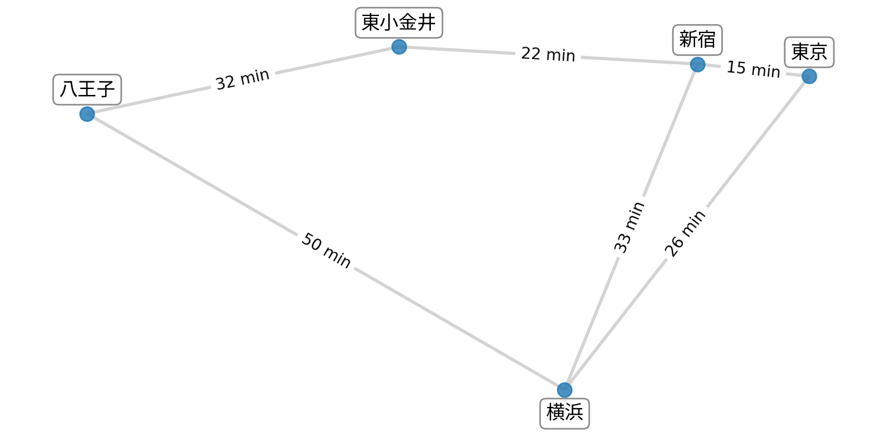
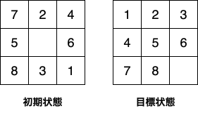
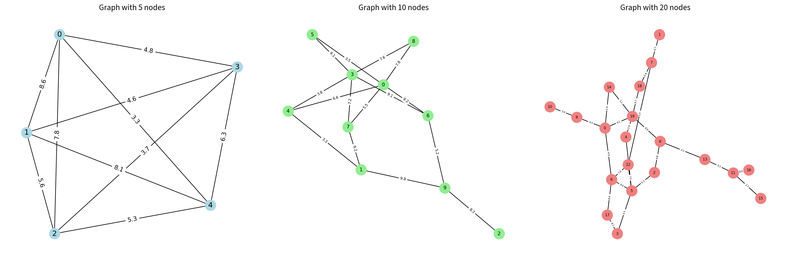
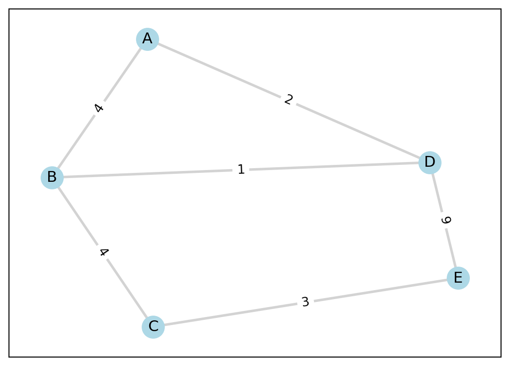
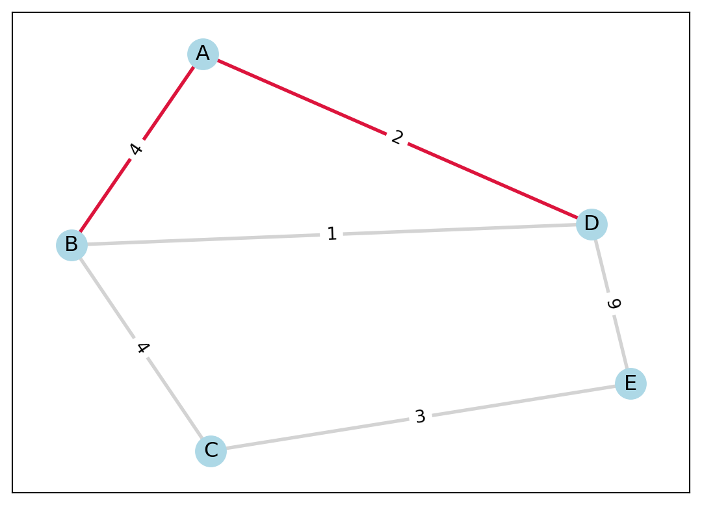
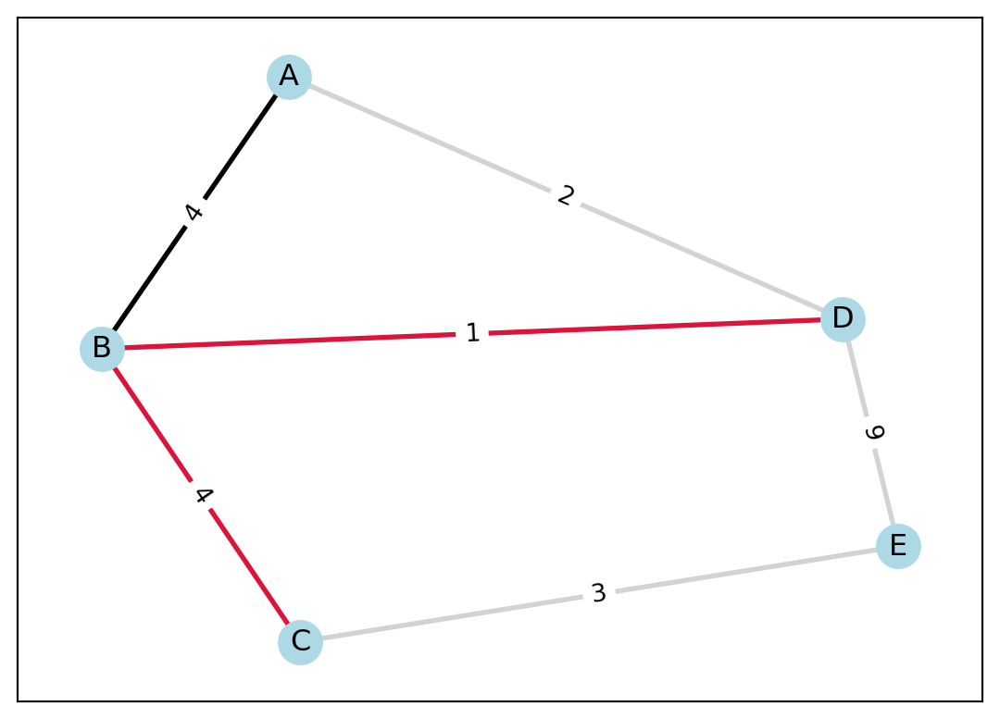
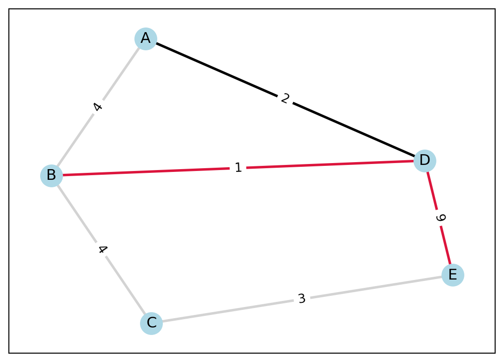
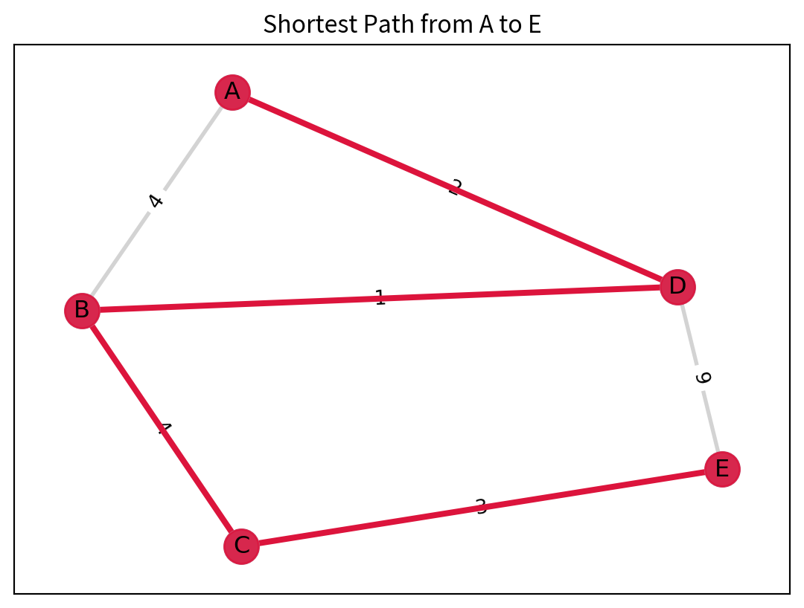
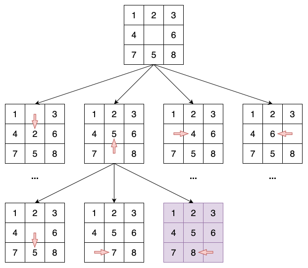

1 探索による問題解決
1.1 学習目標
- コンピュータがどのようにして「問題を解く」のか，その考え方を知る
- 探索問題の基本的な考え方を理解する
- 探索アルゴリズムが，いろいろな現実の問題にも役立つことを知る
1.2 クイズ
田中さんは，法政大学のオープンキャンパスに参加するため，横浜駅から東小金井駅までできるだけ早く行きたいと思っている．
下の図は，電車路線を単純化したものである．頂点は駅，線は駅と駅を結ぶ線路を表し，数値は，所要時間（分）を表す．
横浜駅から東小金井駅まで，最短で到達するための経路はどれか？
- 横浜駅 ➝ 新宿駅 ➝ 東小金井駅
- 横浜駅 ➝ 東京駅 ➝ 新宿駅 ➝ 東小金井駅
- 横浜駅 ➝ 八王子駅 ➝ 東小金井駅
ノート答え
答え: 横浜 ➝ 新宿 ➝ 東小金井
時間: 55 分
🤔コンピューターはどのようにしてこの問題を解くのだろうか？
1.3 問題解決の手順
flowchart TD
問題の理解 --> 数学モデル
数学モデル --> アルゴリズム
アルゴリズム --> 答え
1.4 問題の理解
- 出発地：横浜駅
- 目的地：東小金井駅
- 手段：電車を利用して，駅から駅へ移動する
- 制約：決められた路線図にしたがって移動する
- 目標：合計の移動時間が最も短くなるようにする
1.5 モデリング
上記の言葉を使って，探索は以下のように定義できる．
1.5.1 問題例：8パズル

1.5.2 問題例：迷路

1.6 最短経路問題
🤔では，どうやって探索するのか？
ここでは抽象化した例で説明を進める．
今，初期状態Aから，目標状態Eへ到達するための経路を探索する問題を考える．

- グラフ
- 頂点と辺で構成される構造．
- 最短経路問題
- ある二つの頂点間を最短で結ぶ経路を求める問題．
次の図に示すように，グラフには小規模なものもあれば，非常に多くの頂点や辺をもつ大規模なものもある．小規模な問題であれば，手作業で最短経路を見つけることも可能であるが，グラフの規模が大きくなると，手作業では解決が難しくなる．

そこで必要になるのがアルゴリズムである．アルゴリズムをコンピューターに実装することで，最短経路を効率的に求めることができる．
1.7 探索アルゴリズム
最も単純なアルゴリズムは，全ての可能な経路を系統的に列挙し，その中から最短のものを選ぶ方法である．
ここでは，探索木（search tree）を使用し，経路を探索する方法を紹介する．

Step 1:
初期状態Aから探索を開始する．
Aを展開し，BとDを得る．

これを探索木として表すと，以下のようになる．
flowchart TD
id1[A] -- 4 --> id2[B]
id1 -- 2 --> id3[D]
Step 2:
次に，Bを展開し，A，C，Dを得る．
ただし，再びAへ戻るような経路 (A, B, A)は，ループとなり，最適な経路ではないので，探索する必要はない．

そのため，以下のルールを定義する．
- ルール1：(A, B, A)，(A, D, A)のようなすでに通過した頂点に再び戻るような経路（ループ）は，探索の対象から除外する．
探索木を更新すると，以下のようになる．
flowchart TD
id1[A] -- 4 --> id2[B]
id1 -- 2 --> id3[D]
id2[B] -- 4 --> id4[C]
id2[B] -- 1 --> id5[D]
次に，どの順番で頂点を探索していくかを決める必要がある．
以下のようなルールを定める．
- ルール2：同じレベルの頂点を全て探索してから，次のレベルの頂点を探索する．
Step 3:
ルール1に従い，Dを展開し，BとEを得る．

探索木を更新すると，以下のようになる．
flowchart TD
id1[A] -- 4 --> id2[B]
id1 -- 2 --> id3[D]
id2[B] -- 4 --> id4[C]
id2[B] -- 1 --> id5[D]
id3[D] -- 1 --> id6[B]
id3[D] -- 9 --> id7[E]
Step 4:
同じ手順を繰り返すと，最終的に以下のような探索木が得られる．

flowchart TD
id1[A] -- 4 --> id2[B]
id1 -- 2 --> id3[D]
id2[B] -- 4 --> id4[C]
id2[B] -- 1 --> id5[D]
id3[D] -- 1 --> id6[B]
id3[D] -- 9 --> id7[E]
id4[C] -- 3 --> id8[E]
id5[D] -- 9 --> id9[E]
id6[B] -- 4 --> id10[C]
id10[C] -- 3 --> id11[E]
すべての頂点を探索した結果，以下のような解が得られた．
| 経路 | コスト |
|---|---|
| A ➝ B ➝ C ➝ E | 4 + 4 + 3 = 11 |
| A ➝ B ➝ D ➝ E | 4 + 1 + 9 = 14 |
| A ➝ D ➝ B ➝ C ➝ E | 2 + 1 + 4 + 3 = 10 |
| A ➝ D ➝ E | 2 + 9 = 11 |
最短経路は，A ➝ D ➝ B ➝ C ➝ Eで，コストは10である．

1.7.1 アルゴリズムの表現
以上で紹介した探索アルゴリズムは，幅優先探索（Breadth-First Search, BFS）と呼ばれる．次の図に示すように，1，2，3，4の順に探索を行う．

1.7.2 計算例：8パズル

1.7.3 計算時間
| 項目 | 値 |
|---|---|
| 各頂点の隣接頂点数 | 10 |
| 探索木の深さ | 14 |
| 計算能力 | 1秒あたり100万個の頂点を探索可能 |
| メモリ | 無限大 |
| 計算時間 | 約3.5年 |
1.7.4 アルゴリズムの改善
🤔より効率的なアルゴリズムは？
最良優先探索，ダイクストラ法，分枝限定法などのアルゴリズムは，以下のような工夫を行う．
- 幅優先で探索するのではなく，何らかの規則を用いて，次に探索する最も望ましいノードを選択する
- 例えば，コストが最小のノードを選ぶ
- 探索しなくてもよいノードを除外する
- 例えば，明らかに最適解ではないノードを探索しない
1.8 プログラミング
上記のアルゴリズムを実装するのは難しそうだが，実は以下のように簡単に実装できる．
from collections import deque
def bfs(graph, start, goal):
queue = deque([(start, [start])])
visited = set()
while queue:
current_node, path = queue.popleft()
if current_node == goal:
return path
if current_node not in visited:
visited.add(current_node)
for neighbor in graph.get(current_node, []):
if neighbor not in visited:
queue.append((neighbor, path + [neighbor]))
return Noneこの資料に載せているほとんどの図は，プログラムで自動生成している．
1.9 実社会での応用例
1.9.1 例1：配送計画問題

1.9.2 例2：組立工程のレイアウト最適化

1.9.3 例3：超大規模集積回路（VLSI）のレイアウト設計

1.9.4 例4：AlphaGo
AlphaGoは，囲碁の最適な手を探索するために，深層学習とモンテカルロ木探索を組み合わせたアルゴリズムを使用している．世界トップ棋士である柯潔に勝利したことを機に，AlphaGoを人間との対局から引退させると発表された．

1.10 まとめ
- 探索は，初期状態から目標状態へ到達するための一連の行動を見つける作業である．
- 系統的に探索を行うことで，手作業で簡単な最短経路問題や迷路問題を解決できる．
- 複雑な問題を解くには，コンピュータとプログラミングが不可欠
- プログラムの設計図がアルゴリズム
1.11 🔍もっと知りたい人へ
以下のキーワードを使って，さらに深く学ぶことができる．
1.12 経営システム工学って何？
- 数理科学で社会の諸問題を解決
- 社会の様々な分野における意思決定やマネジメント全般の問題に対して、数学や統計学、計算機科学など、数理科学を基礎として解決をはかる立場を「経営システム工学」と呼びます。
- 研究対象
- 経営システムを含む，社会の様々な分野における意思決定やマネジメント全般の問題
- 主に以下の分野を対象とする
- 生産システム，物流システム，交通システム，経済，金融など
- 研究手法
- 数学や統計学，計算機科学など
- 主に以下の手法を用いる
- 最適化，シミュレーション，モデリング，データ分析，機械学習，AIなど
1.12.1 研究室
経営システム工学科の研究室は以下のような研究テーマを扱っている．詳細はこちらから．
- データサイエンス
- 人工知能・機械学習
- 数理最適化
- アルゴリズム
- モデリング
- 経済
- 金融
- 応用代数
- など
1.13 経営システム工学の適用例
1.13.1 適用事例
- 新型新幹線「N700系」の“顔”を生んだ「遺伝的アルゴリズム」の秘密
- 遺伝的アルゴリズム（最適化手法の一つ）を用いて，新型新幹線のデザインを最適化した事例．
- 数理最適化技術を応用した業務改革を実現する生産計画システムの開発について
- 日本製鉄株式会社と日鉄ソリューションズ株式会社は，数理最適化技術を用いて，出鋼スケジューリングシステムを開発した．
- AIを活用し，製造業のグローバルサプライチェーンの需要予測と計画最適化を実現
- 日立ソリューションズは，AIを活用して製造業のグローバルサプライチェーンの需要予測と計画最適化を実現した．
- 拠点配置最適化コンサルティング＆シミュレーション
- 三菱ケミカルエンジニアリング株式会社は，工場・物流センターの拠点配置のシミュレーションを行うことで，最適な拠点配置を算出できる．
1.13.2 研究事例
- Wang et al., 2012
- 中国工商銀行（ICBC）はIBMと提携し，オペレーションズ・リサーチ（OR，経営工学の中心的な学問分野）を活用して，支店ネットワーク最適化システム「Branch Reconfiguration」を40以上の都市に導入した．このシステムは，支店の配置を高速に最適化し，蘇州市では，10億4000万ドルの預金増加を実現した．
- Allgor et al., 2023
- Amazonがロボットのピッキングアルゴリズムを再設計し，ロボットの移動距離が62%減少した．
- Dang et al., 2024
- ドイツの配送企業DHLのサプライチェーン部門が，整数計画を用いてアメリカでの荷物の配送計画を効率化した．2020年から2年半で1億1700万ドルのコスト削減を実現した．